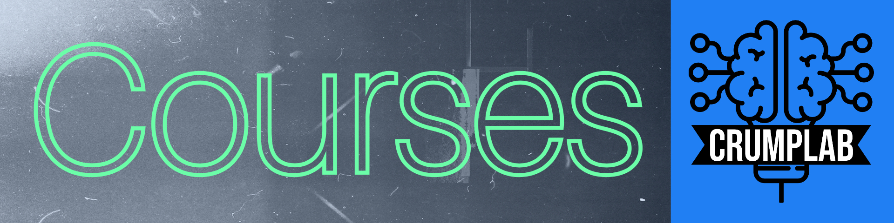

Courses
Courses.Rmd
List of current and previous courses taught at Brooklyn College of CUNY and the Graduate Center of CUNY.
Spring 2022
Psyc 2530 Introduction to Cognitive Psychology (Asynchronous online)
Brooklyn College of CUNY, Undergraduate, Psychology, Asynchronous online
The course website contains syllabus, textbook, slide decks and more.


Psyc 7709G - Using R for Reproducible research
Brooklyn College of CUNY, Experimental Psychology MA program
The course website contains syllabus and readings.

Recent courses
Some of these courses have open materials, older courses may not.
Psyc 2530 Introduction to Cognitive Psychology, Fall 2021
Brooklyn College of CUNY, Undergraduate, Psychology
All materials for Fall 2021 are stored as a branch in the github repository for this course https://github.com/CrumpLab/cognition.
Psyc 7765/66G - Statistical Methods Applications I
Brooklyn College of CUNY, Master’s, Experimental Psychology
The course website contains syllabus and readings.
Psyc 73800 - Cognitive Psychology
Graduate Center of CUNY, Doctoral, Cognitive and Comparative Psychology Training (CCP) area
Bi-weekly modules taught by different faculty. The course website contains syllabus and readings.

Psyc 7709G - Statistical Methods Practicum II
Brooklyn College of CUNY
The course website contains syllabus and readings.

Psyc 73800 - Cognitive Psychology
Graduate Center of CUNY
Bi-weekly modules taught by different faculty. The course website contains syllabus and readings.
Psyc 7709G - Statistical Methods Practicum I
Brooklyn College of CUNY
The course website contains syllabus and readings.

Psyc 7709: Using R for reproducible research
This is a special topics course for the Experimental Psychology Master’s program. The course website is https://crumplab.github.io/psyc7709_2019/
Psyc 3400: Statistical Methods in Psychological Research
All materials are totally free and open, including the course Website, textbook, and lab manual.

Psyc 73800 - Cognitive Psychology
Fall 2018 (2017) @ Graduate Center of CUNY
Bi-weekly modules taught by different faculty. The course website contains syllabus and readings.
Psyc 80103: Cognitive Technologies: From theory and data to application
Spring 2018 @ Graduate Center of CUNY
A doctoral seminar course (special topics) covering emerging and old cognitive technologies. Check out the course website, or read the book we wrote on the topic (students in the course wrote the chapters).

Psyc 3450: Experimental Psychology
Fall 2017 (2016, 2015, 2013, 2012, 2011) @ Brooklyn College
An undergraduate course on research methods, using a free OER textbook! Written by myself and many others. Check out the textbook here. Check out the course website here.

Psyc 80103: Computer Programming for Psychologists
@ Brooklyn College
I put my lecture notes into a book (covers R, Livecode and a bit of web programming.)
Psyc 80103 : Special Topics Seminar: Learning & Attention
Special topics doctoral course @ GC Co-taught with Andrew Delamater